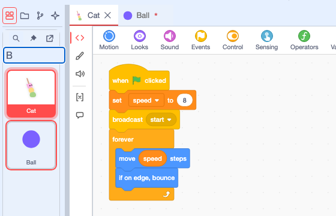
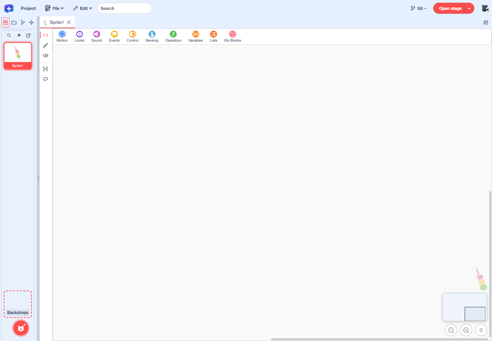
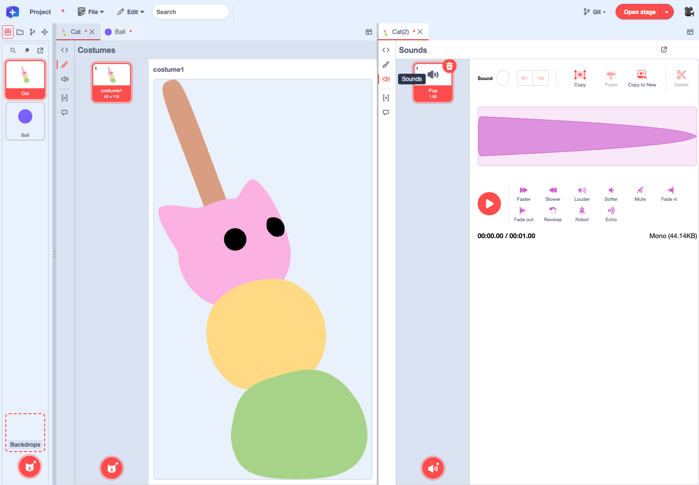
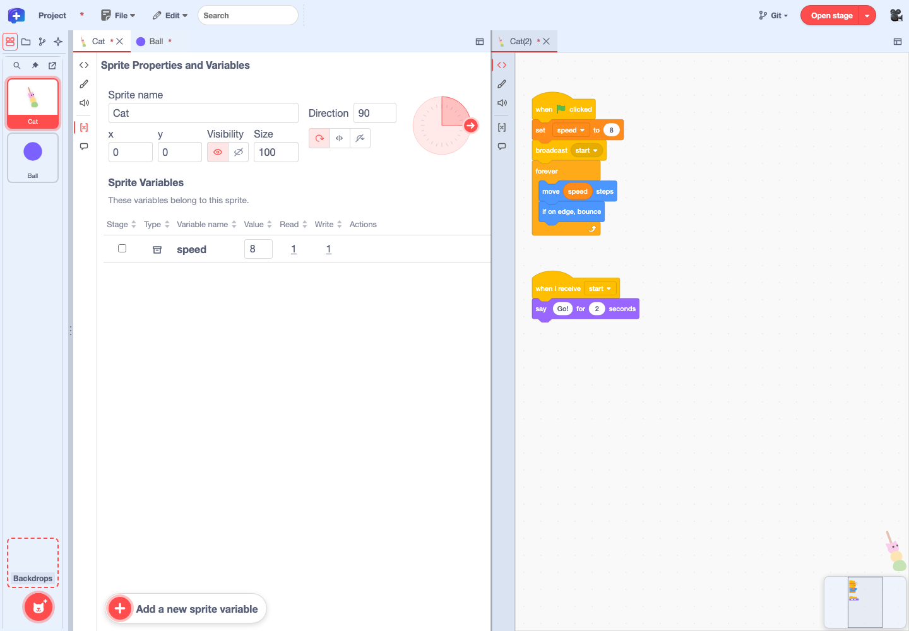
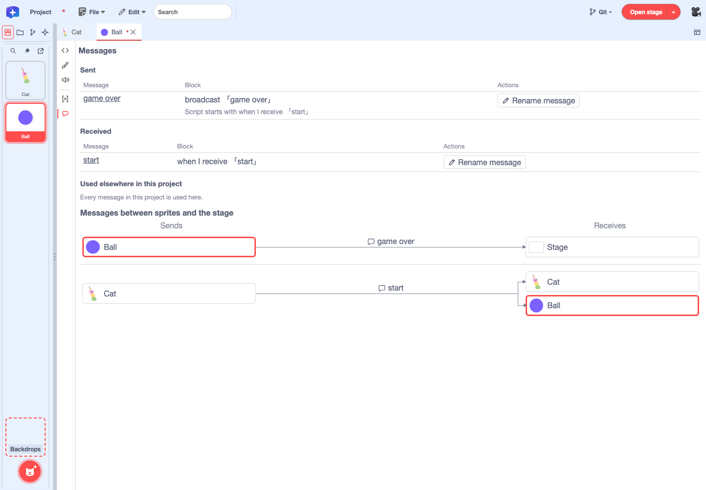
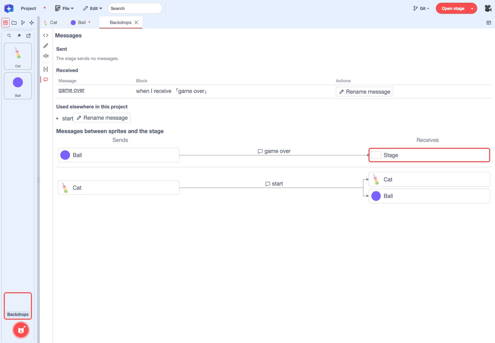

Feature guide 3/12 · Updated November 14, 2026
Edit sprites and the backdrop
Choose what to edit in the sprite list on the left, then use the icons stacked along the left edge of the editor panel to switch between code, costumes, sounds, properties and variables, and messages.
3.1 Find and pin sprites in the sprite list
Choose "Sprites" in the vertical icon strip on the far left to open the sprite list, which shows a tile for each sprite. This is where you choose what to edit. At the top of the list are the "Search sprites", "Pin sprite list", and "Undock sprite list" buttons. Type part of a name into "Search sprites" to scroll to the first matching tile and highlight it with a frame. The "Backdrops" tile below the list opens the stage backdrop.

When you unpin the list with the pin button, the pin is shown with a slash and the list tucks into the left edge. Rest the pointer on the left edge or press "Reveal sprite list" to open it. While the list is pinned, widening it arranges the tiles in multiple columns. To search the whole project for blocks or assets, use the search box in the menu bar.
Right-click a sprite tile to open a menu with "Open", "duplicate", "export", "Rename sprite", "delete", and "create folder" (context menus). When the same sprite is open in more than one tab, numbered tabs such as "Cat" and "Cat(2)" appear to the right of "Open", so you can choose which tab to bring to the front (sprite tabs).
Expanding, searching, and pinning the list · Unpinned pin icon · Choosing a numbered tab from the list
3.2 Sprite tabs and the icons on the left edge
When you choose a sprite in the list, a tab for that sprite opens in the top row of the editor panel. Switch between open sprites with these tabs. Right-click a tab to choose "Open in new tab" or "Rename sprite". "Open in new tab" opens the same sprite again in a numbered tab such as "Cat(2)", so each tab can show something different (for example, code in one and costumes in the other).
Five icons are stacked along the left edge of the editor panel. From the top, they are "Code", "Costumes" ("Backdrops" for the stage), "Sounds", "Properties & Variables" ("Global Variables" for the stage), and "Messages". The selected icon is shown with color and a line on its left. Hover over an icon to see its name.

3.3 Edit costumes and sounds
Choose "Split right" from "Editor panel layout" at the top right of the tabs to open the same sprite on the right in a numbered tab (for example, "Cat(2)"). Choose "Costumes" on the left and "Sounds" on the right to work with costumes and sounds side by side. Selecting a sound in "Sounds" shows its waveform, and the play button below it lets you listen. If the sprite has no sounds, add one with the button at the bottom left.
Only the pane you are working in shows the full editor. The other pane shows a preview of its selected costume or sound. Interact with that pane and it switches to the editor.
In the costume and backdrop editors, "Fonts…" at the top lets you manage the project’s fonts. Fonts you add can be chosen from the Text tool’s font list in either editor.
Each pane remembers what it was showing and which asset was selected. Switching to another view while recording does not close the recording dialog, and the recorded sound is saved to the sprite where the recording started.

In development In the local integration build, the costume preview in the inactive pane has a maximum height.

Asset selection and editor state · Recording target sprite · Font management
3.4 Edit properties, variables and lists
Open "Properties & Variables" to see the sprite’s properties and its "Sprite Variables" under the heading "Sprite Properties and Variables".
- Properties: Edit the sprite name, x, y, visibility (eye icon to show, slashed eye to hide), size, direction, and rotation style (all around, left-right, or don’t rotate).
- Variable list: Shows the variables and lists that belong to what is open. A sprite’s "Properties & Variables" lists the sprite variables that only that sprite uses; the stage’s "Global Variables" lists the global variables shared by the whole project. Cloud variables have a cloud icon to the right of the name.
- Changing values: Type a value and press Enter, or move focus out of the field, to apply it. Press Esc before applying to cancel the edit.
You can type the direction as a number or drag the arrow on the edge of the dial. Switch the rotation style with the three icons under the direction field. "All around" lets the sprite face any direction, and "Left-right" lets it face left or right. With "Don't rotate", the dial is locked and you change the movement direction by typing a number.
Reviewing variables and lists in the table
The table’s columns are "Stage", "Type", "Variable name", "Value", "Read", "Write", and "Actions". The "Stage" checkbox turns the value’s display on the stage on or off. "Type" shows a box icon for variables and a table icon for lists. Click a column heading to sort by it.
The "Read" and "Write" columns show how many blocks read and change the variable. Click a count to open the menu-bar search filtered by "Variable access", where you can jump to the matching blocks (Search the whole project).
A list’s "Value" shows its first five items, and the number of remaining items appears as, for example, "+1". Press "Edit" to open the "Edit list" dialog, where you can change items, move them up or down, delete them, and use "Add item". Press "Save" to apply the changes.

Split the panel and open "Properties & Variables" in one pane and "Code" in the other to edit code while watching the values (splitting panels).
Editing and saving a list from the table in the Ball Demo
Creating, renaming, and deleting variables and lists
Press "Add a new sprite variable" ("Add a new global variable" for the stage) at the bottom left of the panel to open the creation dialog. Choose what to create with the "Variable" and "List" tabs at the top, enter a name, and press "Create". When creating a global variable, you can also choose "Cloud variable".
Hover over a variable’s row, or focus it with the keyboard, to show the "Rename variable" and "Delete variable" buttons in the "Actions" column.
- If the name is empty, or a variable with the same name already exists in the same scope, the reason is shown and you cannot confirm.
- A confirmation appears before deleting. A variable used by blocks cannot be deleted. Remove its uses first so that both the "Read" and "Write" counts are 0.
Checking values for each clone
When clones are created while the project runs, you can choose which one to show to the right of the "Sprite Properties and Variables" heading. Up to five clones can be picked directly by number; with six or more, move with the left and right arrows or pick a number from the list in the middle. You can edit the selected clone’s position, direction, size, visibility, and rotation style, and the values of its sprite variables. The sprite name is read-only. Changes to properties and values last only for that run, and if the selected clone disappears, the pane returns to the original sprite.
While a clone is selected, the "Read" and "Write" counts still come from the original sprite’s code, and you can search for uses from the counts. Adding, renaming, or deleting a variable applies to the original sprite and all of its clones. Turning on display on the stage shows the original sprite’s value.
Merging the properties and variables tabs · Creating, renaming, and deleting variables · Searching from the counts · Editing lists and clone variables · Creating lists from the dialog
3.5 Check who sends and receives messages
Open "Messages", below "Properties & Variables", to see which messages the open sprite or backdrop sends and with which blocks, and which messages it receives and with which hat blocks, split into "Sent" and "Received".
The "Block" column shows the block used to send or receive. When that block is in the middle of a script, a line such as "Script starts with when green flag clicked" below it shows where the script begins.


- A message that is only sent shows "No receivers", and a message that is only received shows "Never sent".
- "Used elsewhere in this project" lists messages that exist in the project but are not used by this sprite or backdrop. Messages that are not used anywhere show "Unused".
- Click a message name in the table ("Open this block") to jump to the code containing that block.
Seeing senders and receivers in the diagram
In the "Messages between sprites and the stage" diagram, arrows run from "Sends" on the left to "Receives" on the right, with sprite and stage thumbnails at each end. The message name appears next to the speech-bubble icon above each arrow. The open sprite or backdrop has a thick frame in the accent color. For a sprite, the diagram shows only the messages that sprite sends or receives; for the stage, it shows all sending and receiving in the project. Click a box with a thumbnail to jump to that sprite’s or the stage’s code.
Renaming a message
Use "Rename message", with the pencil icon in the table’s "Actions" column, to change a message’s name. Messages are shared across the whole project, so renaming one changes how it appears in every block that sends or receives it. You cannot rename a message to a name that is already in use.
When you search the whole project for a message name, sending and receiving are classified the same way as in this table (Choose what to search).
Message connections · Improved diagram and send/receive tables · Message design
3.6 Edit the backdrop
Choose the "Backdrops" tile below the sprite list to open the editor panel for the stage. Like the tile, its tab is labeled "Backdrops".
The icons along the left edge are in the same order as for sprites, except that "Backdrops" replaces "Costumes" and "Global Variables" replaces "Properties & Variables". Edit the stage’s backdrop images in "Backdrops", its scripts in "Code", and its sounds in "Sounds". "Global Variables" lists the variables and lists used by the whole project, and the diagram in "Messages" shows all sending and receiving in the project (Check who sends and receives messages).
Right-click the backdrop tile to choose "Open" or "Export Stage". "Export Stage" exports the stage as a .stage3 file (Transfer scripts and the stage to another project).